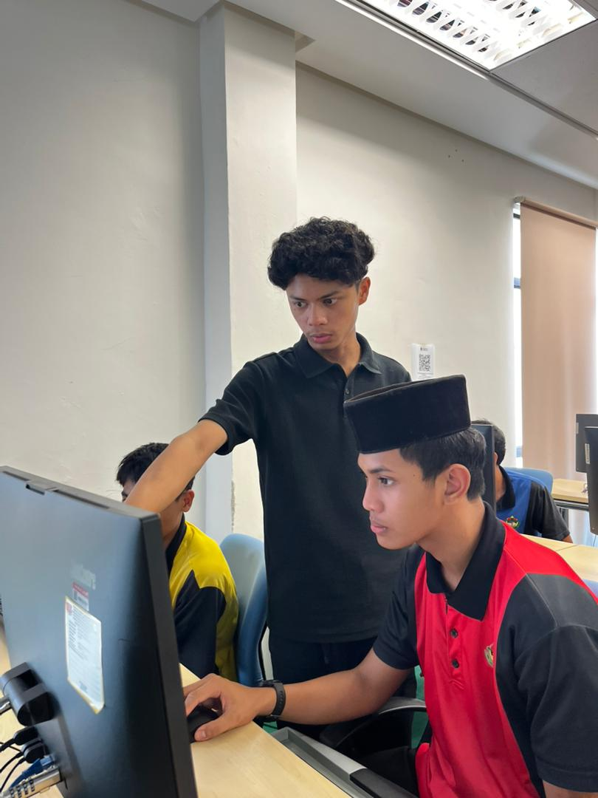

Protecting systems, networks, and data through secure and resilient solutions
Specializing in Computer Network Security

I am a high-achieving Computer Science (Computer Network Security) undergraduate at Universiti Sultan Zainal Abidin (UniSZA) with a current CGPA of 3.77. I am actively seeking a 6-month internship (27 September 2026 - 26 March 2027) in cybersecurity, network defense, or digital forensics-related roles.
I am passionate about safeguarding digital infrastructure and building resilient, secure systems. My background includes developing end-to-end technical projects involving secure image steganography, IoT-based systems, and cryptographic algorithm implementation.
Kali Linux, Penetration Testing, Vulnerability Scanning, Burp Suite, Metasploit
Wireshark, Nmap, Volatility, Autopsy, FTK Imager, Hashcat, HxD
Python, ESP32 Microcontroller, PRNG & LSB Techniques, NS3 Simulations
Ongoing
Engineered a secure image steganography method utilizing ESP32 microcontrollers, integrating PRNG, XOR, and LSB techniques to prevent unauthorized access. The workflow involves manually inserting carrier images and secret files via a computer to ensure robust data concealment.
May 2025 - June 2025
Developed an autonomous robotic system utilizing an AI-driven vision system for real-time classification and sorting of recyclable waste streams (plastics, aluminium, paper).
April 2025 - May 2025
Simulated emergency medical services in NS3 to model decentralized communication among mobile nodes. Evaluated AODV and DSDV protocols based on route discovery time and packet delivery ratio.
RoboPro Club | Oct 2025 - Present
Handled structured training sessions for over 60 participants on embedded systems and ESP8266 programming. Conducted 3D modeling workshops using Tinkercad.
Kedai Masakan Tokma | Mar 2025 - Oct 2025
Collaborated to digitalize SME operations, boosting brand visibility from 0 to 1,029 followers and 2,583 likes, significantly increasing sales and customer reach.
Projek Khidmat Masyarakat | Mar 2024 - Oct 2024
Led a team of 50 committee members, coordinating logistics, stakeholder engagement, and resource mobilization for impactful community outreach.
Jawatankuasa Perwakilan Pelajar (JPP) | Jul 2022 - Jul 2023
Led and represented the student body in welfare and university affairs, coordinating with management to address student concerns.
July 2025 - October 2025
Maintained high performance handling over 50 customers daily. Translated complex product information and policies into clear, understandable terms for diverse audiences.
July 2023 - October 2023
Optimized workflow and quickly pivoted between different roles based on immediate team needs in a fast-paced, time-sensitive environment.
I am actively seeking opportunities starting September 2026. Let's discuss how I can contribute to your team's security posture.